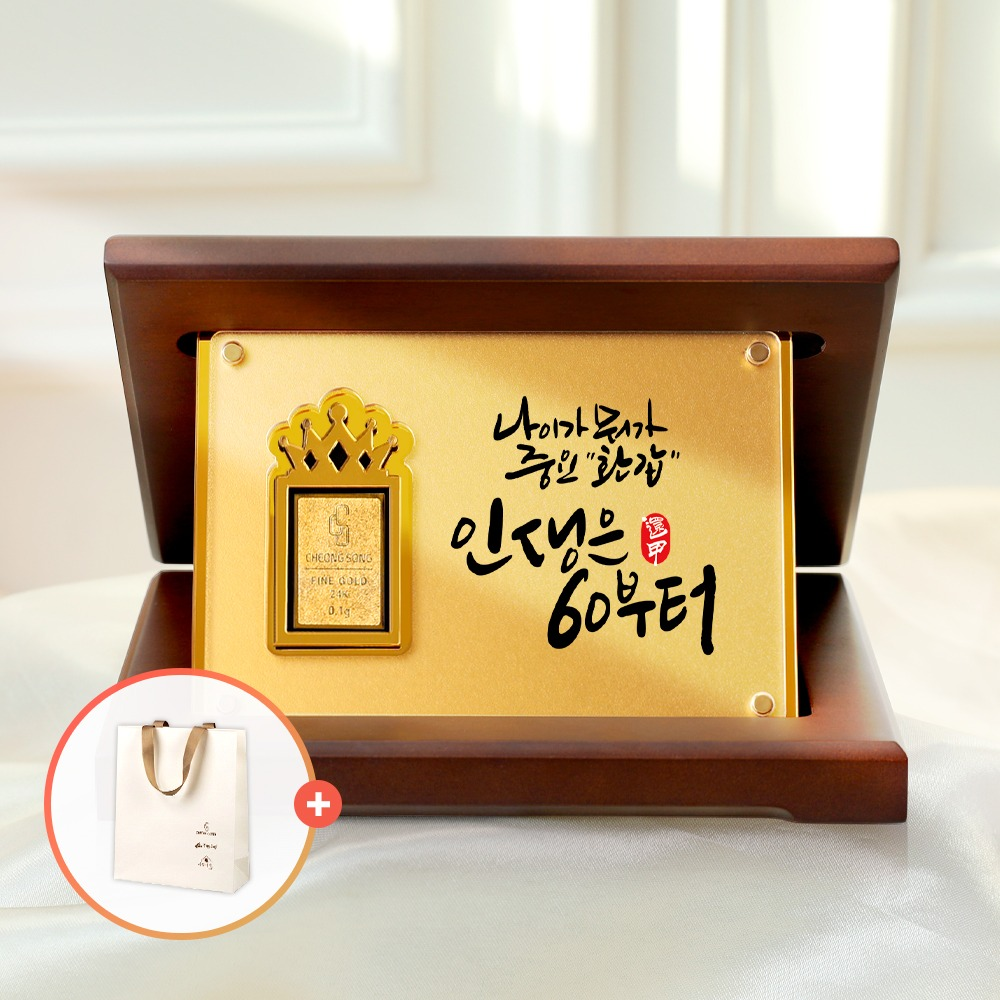
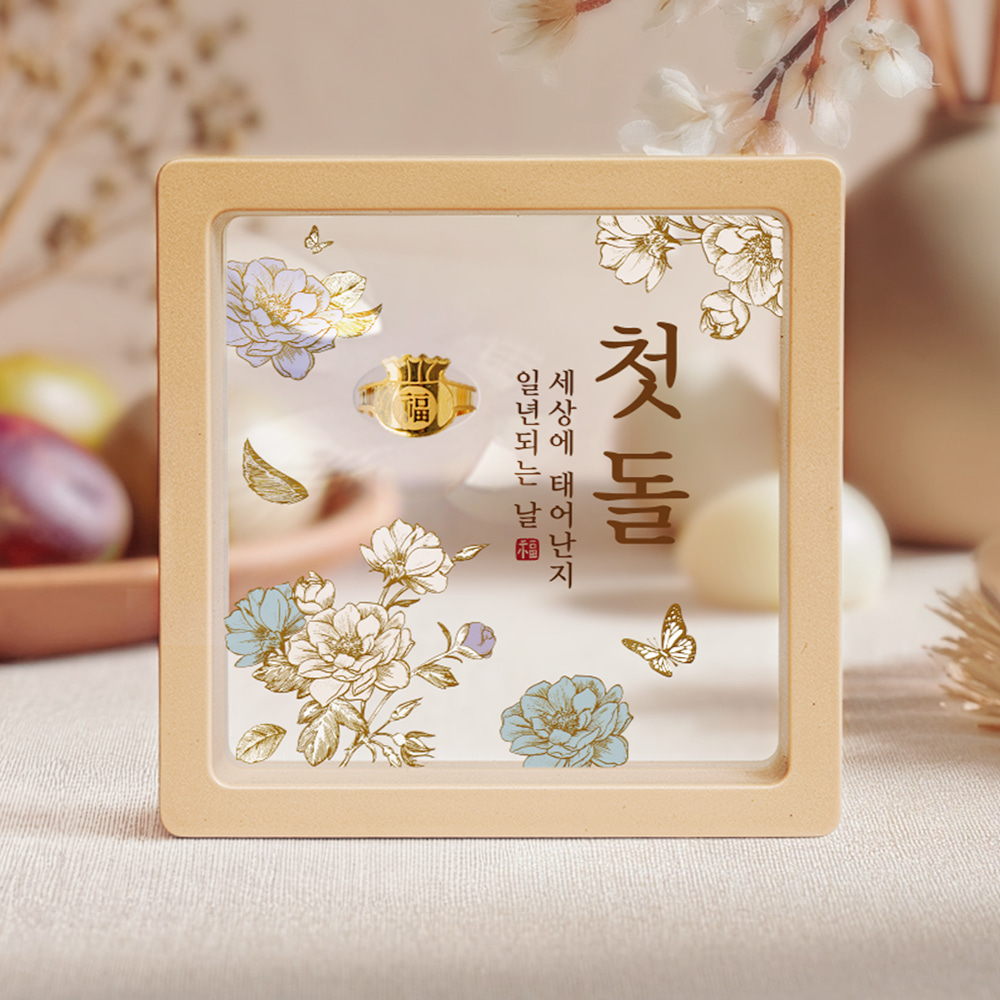
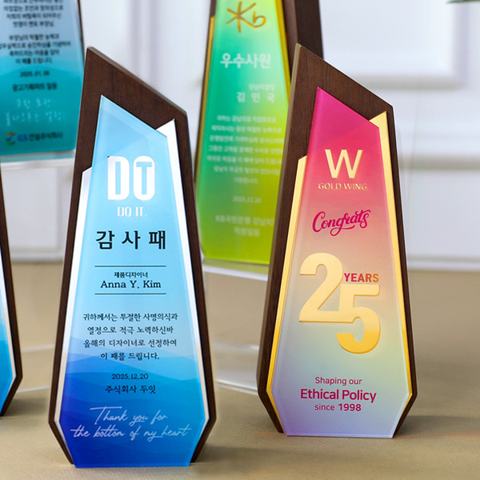
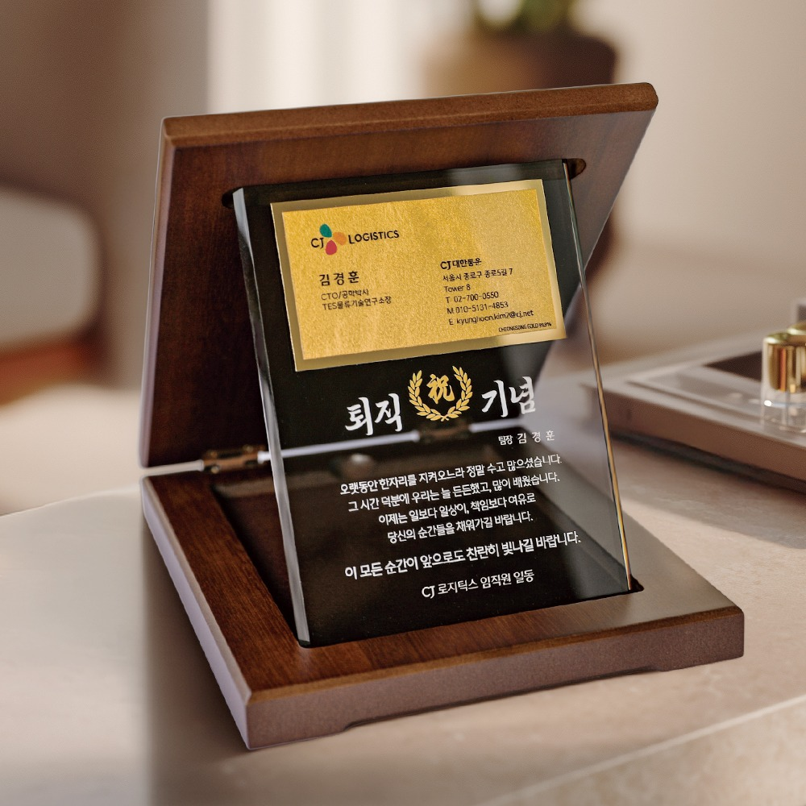
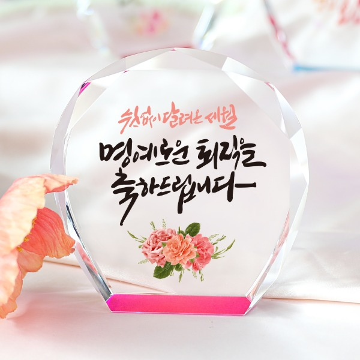

Launched Products
기획·출시 제품
청송기획 재직 중 직접 기획에 참여한 제품 중, 매출 상위권 제품들을 대표로 소개합니다.






도깨비 소원카드
기획·촬영·상세페이지조기 마감 · 재문의 지속
드라마 '도깨비'에서 착안한 부적 스타일의 이벤트성 새해 선물입니다.
본질을 먼저 이해하고, 마음을 움직이는 디자인을 고민합니다.
이력서에는 다 담지 못한 이야기를, 대화하듯 편하게 풀어봤습니다.
청송기획 재직 중 직접 기획에 참여한 제품 중, 매출 상위권 제품들을 대표로 소개합니다.





드라마 '도깨비'에서 착안한 부적 스타일의 이벤트성 새해 선물입니다.

회사 내 핵심 부서들과 소통해 기존 시스템의 문제점을 파악하고, 고객이 직접 편집할 수 있는 셀프 디자인 시스템 구축 프로젝트를 진행했습니다. 예상보다 2개월 앞당겨 완료하였고, 도입 이후 매출에도 30% 이상 기여하였다는 공식 보고서를 확인하였습니다.
실제 판매 중인 제품 5종을 소재로, 브랜드와는 무관하게 개인적으로 진행한 AI 이미지·영상 샘플 작업입니다.대표 이미지를 클릭하면 화면 가득 영상이 나오고, 재생 버튼을 누르면 소리와 함께 재생됩니다
 광고 영상▶
광고 영상▶여름 해변에서 쓰는 산뜻한 선크림을 콘셉트로, 모래·물방울·햇살 질감을 강조해 만든 브랜드 광고 영상입니다.


 광고 영상▶
광고 영상▶탄산감과 과즙의 청량함을 강조한 에너지 음료 광고 영상입니다. 캔이 회전하고 과즙이 튀는 컷으로 시원한 무드를 표현했습니다.


 광고 영상▶
광고 영상▶천연 효모 성분을 강조한 프리미엄 헤어케어 브랜드 영상입니다. 습기 찬 유리와 풍성한 거품으로 부드러운 무드를 표현했습니다.


 광고 영상▶
광고 영상▶실제 판매 중인 망고 아이스바를 소재로, 해변·카페·가족 일상 등 다양한 무드의 포스터와 라이프스타일 컷을 담은 광고 영상입니다.


 광고 영상▶
광고 영상▶컬러풀한 홈 스타일링 속에 자연스럽게 녹아드는 라이프스타일 텀블러 콘셉트 비주얼입니다.


PC와 모바일 어디서나 가독성과 설득력을 잃지 않는 상세페이지입니다. 제품의 핵심 가치를 한눈에 전달하고, 감각적이고 트렌디한 비주얼로 구매 전환까지 이끄는 것을 목표로 작업했습니다. 공기청정기·건강기능·뷰티·생활용품 등 다양한 카테고리의 상세페이지를 기획부터 디자인, 제품 촬영까지 직접 진행했습니다.
Photoshop제품촬영기여도 100%


브랜드의 특징을 효과적으로 전달하기 위해 패키지 디자인을 기획하고, 소비자의 시선을 끌 수 있는 컬러와 레이아웃을 적용해 제품 정보를 직관적으로 전달하는 것을 목표로 제작하였습니다.작은 이미지를 클릭하시면 큰 이미지로 볼 수 있습니다
PhotoshopIllustrator기여도 100% AI를 이용하여 제작된 3D 목업 영상입니다
AI를 이용하여 제작된 3D 목업 영상입니다잡지광고·포스터부터 브로셔·리플릿·메뉴판까지 — 제품과 브랜드 성격에 맞춘 다양한 컨셉의 편집물을 기획·디자인했습니다.작은 이미지를 클릭하시면 큰 이미지로 볼 수 있습니다
PhotoshopIllustrator기여도 100% AI를 이용하여 제작된 3D 목업 영상입니다
AI를 이용하여 제작된 3D 목업 영상입니다DSLR을 이용한 제품·인물 직접 촬영. 조명과 연출을 설계해 디자인에 바로 쓰이는 결과물을 만듭니다.이미지를 누르면 크게 볼 수 있습니다
캐논 5D Mark 4기여도 100%


해보지 않은 일 앞에서 ‘할 수 있을까?’보다
‘왜 안돼, 한번 해보자.’라는 마음으로 시작합니다.
웹디자인을 시작으로 기획, 신제품 개발, 브랜드 운영, 디자인팀 총괄까지.
한 가지 역할에 머무르지 않고 필요하다면 새로운 영역을 배우고 제 것으로 만들어왔습니다.
그 과정에서 각각의 경험을 연결해 디자인을 넘어 제품과 브랜드 전체를 더 넓게 바라보는 시야를 갖게 되었습니다.
이제 그동안 쌓아온 저의 경험이
새로운 곳에서 가치 있게 쓰이길 바랍니다.